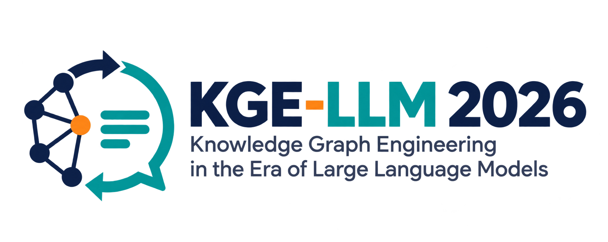

Prof. Dr. Kouji Kozaki
Osaka Electro-Communication University
Japan
A forum for researchers and practitioners exploring the bidirectional synergy between Knowledge Graph Engineering and Large Language Models.
Large Language Models (LLMs) are transforming the way Knowledge Graphs (KGs) and ontologies are constructed, maintained, and utilized. LLMs offer new opportunities for knowledge acquisition, knowledge graph and ontology engineering, entity and relation extraction, semantic annotation, knowledge graph completion, and natural language interaction with structured knowledge.
At the same time, Knowledge Graphs are becoming an essential foundation for enhancing the reliability, explainability, controllability, and factual grounding of LLMs and LLM-based AI systems through Graph Retrieval-Augmented Generation (GraphRAG), knowledge-grounded reasoning, semantic memory, and agentic AI.
The workshop covers both directions of research, alongside evaluation methodologies, trustworthy AI, benchmark datasets, practical deployment, and real-world applications. It brings together the Knowledge Graph, Semantic Web, Ontology Engineering, Natural Language Processing, and AI communities to discuss how Knowledge Graph Engineering should evolve in the era of LLMs.
Takanori Ugai, Takeshi Morita
Kotaro Oshima, Yoichi Takahashi
Kohei Doi, Kouji Kozaki
Kyi Nu, Chutiporn Anutariya, Pattama Krataithong
The discussion slot is tentative, as indicated in the program document. All times are local to Bangkok.
From engineering structured knowledge
to grounding intelligent systems.
Osaka Electro-Communication University
JapanAoyama Gakuin University
JapanNational Institute of Advanced Industrial Science and Technology
JapanSirindhorn International Institute of Technology, Thammasat University
Thailand15th International Joint Conference on Knowledge Graphs
November 19–21, 2026 · Bangkok, Thailand